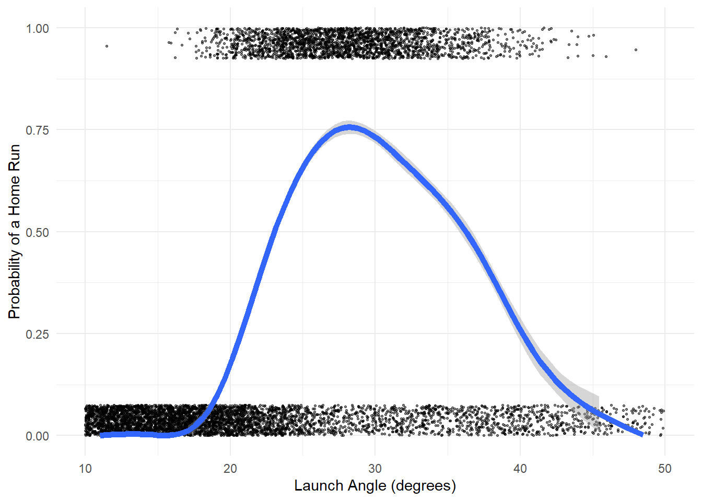
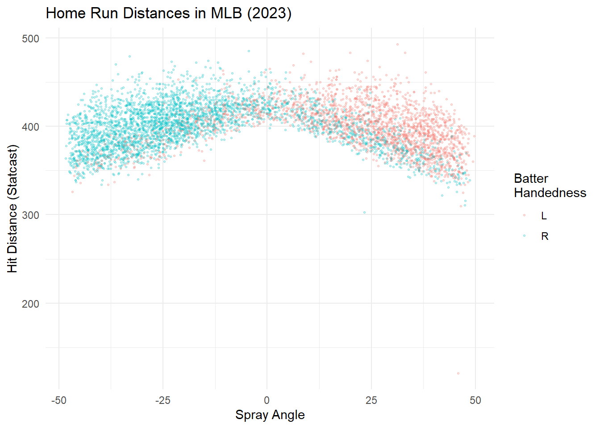
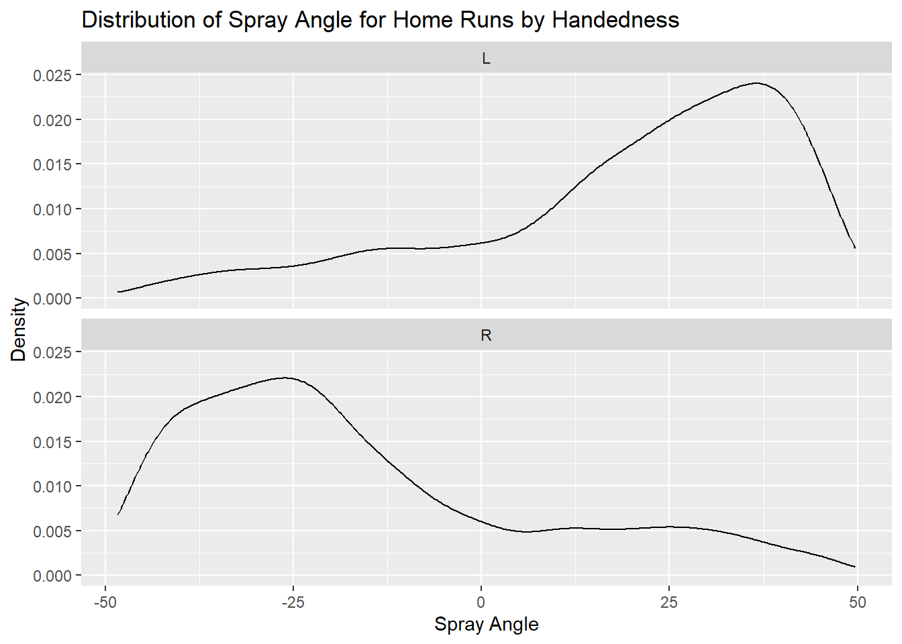
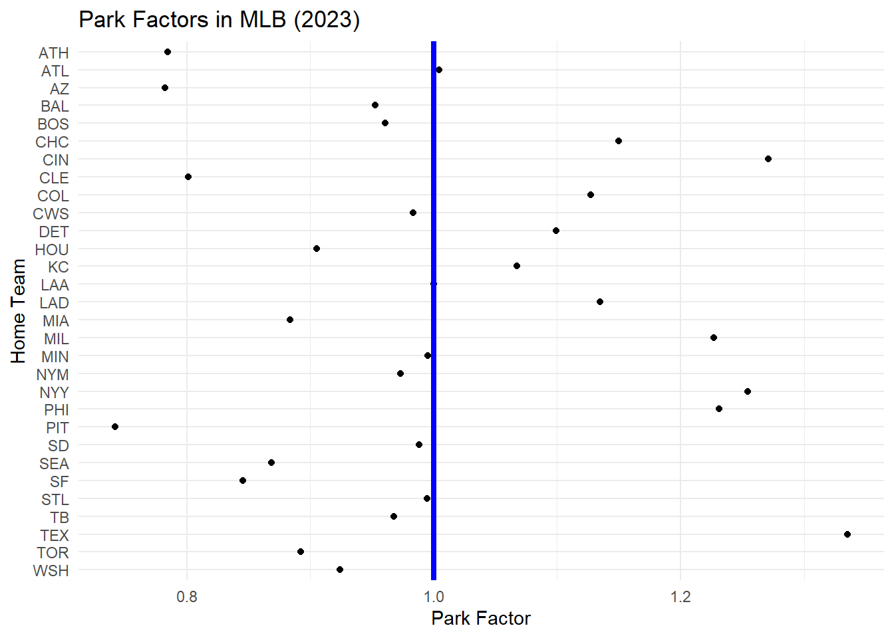

library(tidyverse)
library(knitr)
library(baseballr)MA388 Sabermetrics: Lesson 29
Home Run Hitting II
# Statcast season window for 2023 (regular + early postseason window as example)
# start_date <- as.Date("2023-04-02")
# end_date <- as.Date("2023-10-07")
#
# # Break the range into chunks (API is happier with day- or week-sized chunks)
# date_chunks <- seq(start_date, end_date, by = "1 week")
# date_ends <- pmin(date_chunks + 6, end_date)
#
# # Pull BIP for each chunk
# statcast_2023 <- statcast_search(start_date = date_chunks[1], end_date = date_ends[1])
# for(i in 2:length(date_chunks)){
# message("Fetching: ", date_chunks[i], " to ", date_chunks[i]+6)
# Sys.sleep(0.75) # be polite to the endpoint
# statcast_2023 <<- bind_rows(statcast_2023,statcast_search(start_date = date_chunks[i], end_date = date_chunks[i] + 6))
# }
#
# statcast_2023 <-
# map2_dfr(date_chunks, date_ends, ~{
# message("Fetching: ", .x, " to ", .y)
# Sys.sleep(0.75) # be polite to the endpoint
# statcast_2023 <<- bind_rows(statcast_2023,statcast_search(start_date = .x, end_date = .y))
# })
# # # write_csv(statcast_2023,'statcast_2023.csv')
# #
# bip_2023 <-
# statcast_2023 |>
# filter(type=='X') |>
# mutate(hit = events %in% c('single','double','triple','home run'))
#
# write_csv(bip_2023,'statcast_2023_bip.csv')
# # Today, we’re going to barely scratch the surface on several aspects of home run hitting (so many more things we could do!). We’ll use 2023 Statcast data for everything we do in this lesson.
What is the optimal launch angle for a home run?
Do most batters really “pull” the ball when they hit home runs?
Are some ballparks “hitters’ parks?”
Do some ballparks seem more favorable to either left-handed hitters or right-handed hitters?
Are home runs a pitcher’s failure or a batter’s accomplishment?
library(tidyverse)
library(knitr)
df_23 <- read_csv("statcast_2023_bip.csv") |>
mutate(HR = events == "home_run")What is the optimal launch angle for a home run?
We know from previous lessons that home runs require both a suitable launch angle and exit velocity. Let’s assume you can hit it hard enough, which tends to be 100+ mph for nearly all home runs.
df_23 |>
filter(launch_speed >= 100) |>
ggplot(aes(x = launch_angle, y = as.numeric(HR))) +
geom_jitter(height = 0.075, width = 2, size = 0.5, alpha = 0.5) +
geom_smooth(method = "gam", size = 2) +
scale_y_continuous(
"Probability of a Home Run",
limits = c(0, 1)
) +
scale_x_continuous(
"Launch Angle (degrees)",
limits = c(10, 50)
) +
theme_minimal()
Next Steps:
We’ve looked at league-wide distributions of launch angles in different years, specifically 2015 and 2017. We didn’t see a lot of change across the entire league despite the large increase in home runs, but we might see a different result if we look at a few players whose home run numbers have improved dramatically. Are there individuals whose distribution of launch angles and/or distribution of exit velocities has become significantly more favorable for hitting home runs?
Do most batters really “pull” the ball when they hit home runs?
Let’s look at spray angle for home runs. We’ll need to consider the handedness of the batters as well.
df_23 <- df_23 |>
mutate(
location_x = 2.5 * (hc_x - 125.42),
location_y = 2.5 * (198.27 - hc_y),
spray_angle = atan(location_x / location_y) * 180 / pi
)
df_23 |>
filter(events == "home_run") |>
ggplot(aes(spray_angle, hit_distance_sc, color = stand)) +
geom_point(alpha = 0.25, size = .5) +
labs(title = "Home Run Distances in MLB (2023)",
x = "Spray Angle",
y = "Hit Distance (Statcast)",
color = "Batter\nHandedness") +
theme_minimal()
Interestingly, there seems to be a relatively sharp cutoff at center field where (1) the dominance of one group of players changes abruptly, and (2) there seem to be relatively few home runs hit by comparison to left and right field.
df_23 |>
filter(events == "home_run") |>
ggplot(aes(spray_angle)) +
geom_density() +
facet_wrap(vars(stand), ncol = 1) +
labs(title = "Distribution of Spray Angle for Home Runs by Handedness",
x = "Spray Angle",
y = "Density")
Next Steps:
It certainly looks like both left-handed and right-handed batters pull the ball for most home runs. Could it be that this is an artifact of differences in ballparks where most home runs for left-handed batters are in ballparks with shorter right-field fences? (…and right-handed batters are succeeding in ballparks with short left-field fences.) Maybe center field is just much deeper and harder to reach.
Do some ballparks seem more favorable to either left-handed hitters or right-handed hitters?
We’ll use the “home team” variable in Statcast to help us figure out what percentage of home runs for left-handed and right-handed batters are coming from each ballpark.
df_23 |>
filter(events == "home_run") |>
group_by(stand, home_team) |>
summarize(HR = n()) |>
mutate(percent = HR / sum(HR)) |>
pivot_wider(names_from = "stand", values_from = c("HR", "percent")) |>
mutate(percent_diff = percent_L - percent_R) |>
arrange(-percent_diff) |>
kable(col.names = c("Ballpark", "HR (L)", "HR (R)", "% of HR (L)",
"% of HR (R)", "Diff (%)"),
digits = 3,
caption = "MLB ballparks sorted by most favorable to least favorable to left-handed batters (by difference in relative percentages of home runs achieved by left- and right-handed batters).")| Ballpark | HR (L) | HR (R) | % of HR (L) | % of HR (R) | Diff (%) |
|---|---|---|---|---|---|
| BAL | 95 | 66 | 0.043 | 0.021 | 0.023 |
| BOS | 87 | 85 | 0.039 | 0.026 | 0.013 |
| PIT | 71 | 64 | 0.032 | 0.020 | 0.012 |
| SEA | 82 | 83 | 0.037 | 0.026 | 0.011 |
| CLE | 60 | 57 | 0.027 | 0.018 | 0.009 |
| AZ | 78 | 84 | 0.035 | 0.026 | 0.009 |
| NYM | 83 | 97 | 0.038 | 0.030 | 0.007 |
| ATL | 102 | 129 | 0.046 | 0.040 | 0.006 |
| PHI | 94 | 119 | 0.043 | 0.037 | 0.006 |
| SF | 64 | 78 | 0.029 | 0.024 | 0.005 |
| WSH | 75 | 95 | 0.034 | 0.030 | 0.004 |
| MIN | 89 | 120 | 0.040 | 0.037 | 0.003 |
| MIA | 65 | 87 | 0.029 | 0.027 | 0.002 |
| LAD | 95 | 132 | 0.043 | 0.041 | 0.002 |
| MIL | 76 | 108 | 0.034 | 0.034 | 0.001 |
| STL | 73 | 105 | 0.033 | 0.033 | 0.000 |
| CIN | 84 | 127 | 0.038 | 0.040 | -0.001 |
| CHC | 70 | 114 | 0.032 | 0.036 | -0.004 |
| NYY | 79 | 128 | 0.036 | 0.040 | -0.004 |
| TOR | 60 | 106 | 0.027 | 0.033 | -0.006 |
| ATH | 53 | 100 | 0.024 | 0.031 | -0.007 |
| TEX | 91 | 156 | 0.041 | 0.049 | -0.007 |
| DET | 57 | 109 | 0.026 | 0.034 | -0.008 |
| COL | 65 | 121 | 0.029 | 0.038 | -0.008 |
| KC | 60 | 114 | 0.027 | 0.036 | -0.008 |
| LAA | 69 | 131 | 0.031 | 0.041 | -0.010 |
| SD | 54 | 111 | 0.025 | 0.035 | -0.010 |
| TB | 58 | 123 | 0.026 | 0.038 | -0.012 |
| CWS | 55 | 121 | 0.025 | 0.038 | -0.013 |
| HOU | 60 | 140 | 0.027 | 0.044 | -0.016 |
Next Steps:
Baltimore certainly seems to stand out as a ballpark that favors left-handed batters. The distances to left and right field are now considerably different after a 2022 renovation extended the left field fence (both in height and depth). (https://www.mlb.com/news/how-2022-camden-yards-changes-will-affect-hitters) We could consider a prior season and see if the left-handed advantage was this strong before the renovation. Next, we’ll look at ballparks more generally without any regard for batter handedness. Maybe some ballparks are just more likely to produce home runs due to temperature, altitude, field dimensions, etc.
Are some ballparks “hitters’ parks?”
An interesting approach to this is to consider how many home runs are hit by a team and their opponents when the team is at home versus when they are away. Since most baseball teams play each other in roughly the same number of home and away games, this has the effect of seeing how well the same groups of batters do across many different ballparks.
df_home <- df_23 |>
group_by(home_team) |>
summarize(HR = sum(HR))
df_away <- df_23 |>
group_by(away_team) |>
summarize(HR = sum(HR))
park_factor_df <- df_home |>
inner_join(df_away, join_by(home_team == away_team)) |>
mutate(park_factor = HR.x / HR.y)
park_factor_df |>
ggplot(aes(park_factor, home_team)) +
geom_point() +
geom_vline(xintercept = 1, color = "blue", size = 1.5) +
labs(title = "Park Factors in MLB (2023)",
x = "Park Factor",
y = "Home Team") +
scale_y_discrete(limits = rev) +
theme_minimal()
Next Steps:
Maybe it’s not always about the ballpark dimensions, the weather, etc. Perhaps some teams just have amazing pitchers who don’t give up many home runs. Maybe it’s the batters that are so good and will hit home runs off any pitcher. Let’s now consider the relative effect that individual pitchers and batters have on the likelihood of a home run.
Are home runs a pitcher’s failure or a batter’s accomplishment?
Here we fit a random effects model with random effects for both the pitcher and batter. The response is whether or not the batter hit a home run. We’ll consider the relative size of the standard deviation estimates for pitchers and batters to see if one group or the other seems to be more responsible for home runs.
Our model would look like this:
\[ log \left(\frac{\pi_i}{1-\pi_i}\right) = \mu + \beta_j + \gamma_k\]
where \(\pi_i\) is the probability of a home run on pitch \(i\), \(\mu\) is an overall effect, \(\beta_j\) is the effect due to the \(j\)th hitter, and \(\gamma_k\) is the effect due to the \(k\)th pitcher. We assume the batter and pitcher effects follow normal distributions with mean 0 and standard deviations \(\sigma_b\) and \(\sigma_p\), respectively.
library(lme4)
fit <- glmer(
events == "home_run" ~ (1 | pitcher) + (1 | batter),
data = df_23,
family = binomial
)
VarCorr(fit) Groups Name Std.Dev.
pitcher (Intercept) 0.19715
batter (Intercept) 0.52223 We see that the estimate for \(\sigma_b\) is much larger than \(\sigma_p\), indicating that the variation in home run outcomes is much more attributable to the batters than the pitchers.
Next Steps:
We could make a model that predicts home runs based on pitch location, velocity, movement, etc. Using that model, we could see which pitchers have more or fewer home runs hit against them than expected. We could do the same for batters to see who is making the most out of tough pitches. Think of it like home run expectancy given some pitch variables. Which batters have positive “home runs created” after considering the pitches they saw?